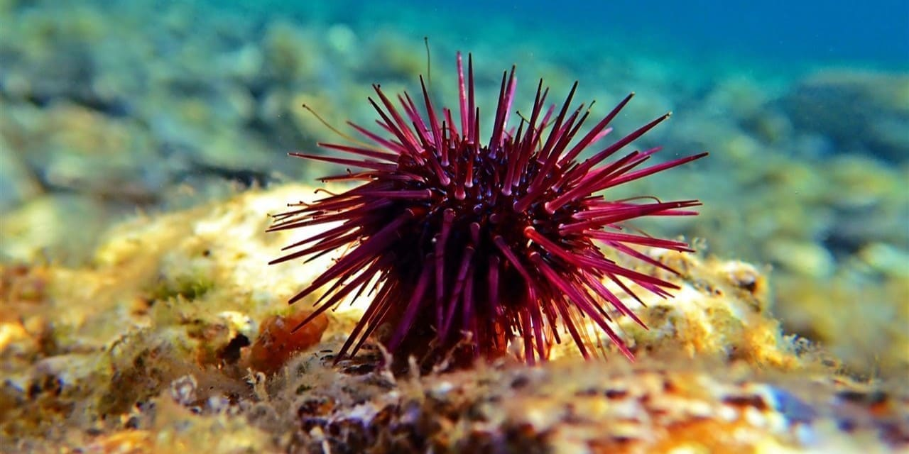
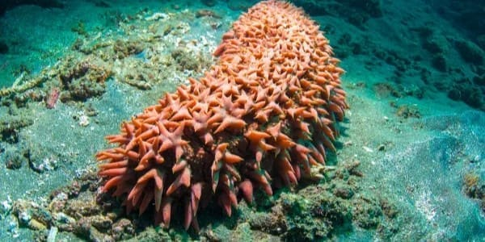

🐠 Zona de Medianoche
En esta zona llega poca luz solar, lo que limita la fotosíntesis. Alberga una gran variedad de peces, camarones, calamares, medusas y otros animales.
PMide entre 1 y 5 cm de largo, aunque algunas especies pueden alcanzar hasta 7 cm.
Son carnívoros. Se alimentan de crustáceos, peces, otros moluscos.
Son hermafroditas, es decir, cada individuo tiene órganos reproductivos masculinos y femeninos. La fecundación es interna. Después del apareamiento, ponen huevos que se desarrollan en larvas planctónicas.
No es peligroso en absoluto. Es un animal marino inofensivo, sin veneno, pinzas ni mecanismo de defensa dañino.
Pez pelicano
Este extraño pez parecido a una anguila engulle a su presa con su enorme boca. Puede expandir su garganta y estómago para tragar peces y crustáceos grandes. Tienen muchos dientes en la mandíbula y el extremo de la cola brilla a través de la bioluminiscencia.Puede alcanzar hasta 1 metro de longitud, aunque generalmente mide entre 60 y 75 cm.
Carnívoro, se alimenta de peces, crustáceos y otros animales pequeños de aguas profundas.
Se sabe realmente poco pero se especula que se reproduce por fecundación externa: el macho y la hembra liberan esperma y huevos en el agua.
No es peligroso, no tiene veneno, no es agresivo y su gran boca no representa una amenaza para las personas.
Calamar gigante
El cuerpo de un calamar gigante puede parecer bastante simple: al igual que otros calamares y pulpos, tiene dos ojos, un pico, ocho brazos, dos tentáculos para alimentarse y un embudo. El calamar gigante puede atrapar presas a una distancia de hasta 10 metros (33 pies) disparando sus dos tentáculos alimenticios , rematados con cientos de potentes ventosas de dientes afilados .Puede alcanzar entre 10 y 13 metros de longitud, incluyendo los tentáculos. Las hembras pueden llegar a medir mucho más.
Carnivoro. Se alimenta de peces, crustáceos y otros calamares.
Se reproducen por medio de huevos, con fecundación interna. El macho transfiere espermatóforos (paquetes de esperma) a la hembra usando un brazo modificado.
No es peligroso. Su tamaño y fuerza podrían representar un riesgo teórico, pero no ha demostrado comportamientos agresivos hacia humanos.
Cerdos marinos
Desempeñan un papel crucial en el ecosistema marino profundo, desde la limpieza de los restos orgánicos que caen al fondo hasta la protección de crías de cangrejo.Miden entre 4 y 15 cm de largo aproximadamente..
Detritívoro (se alimenta de materia orgánica en descomposición). Se arrastra por el fondo marino y consume restos de organismos muertos y partículas orgánicas del sedimento.
Se reproduce sexualmente, aunque se sabe poco debido a su hábitat extremo. Existen machos y hembras la fecundación es probablemente externa.
No presentan riesgo para los humanos. No tienen veneno, ni dientes, ni mecanismos de defensa agresivos.

Erizo de mar
Son equinodermos marinos con un cuerpo globoso o discoidal, protegidos por un caparazón de placas calcáreas y púas móviles. Se alimentan de algas y otros materiales orgánicos, y son fundamentales para el equilibrio de los ecosistemas marinos.Varía según la especie, pero en general miden entre 3 y 10 cm de diámetro..
Se alimentan principalmente de algas y materia orgánica que raspan de las rocas con una estructura bucal especial llamada linterna de Aristóteles.
Se reproducen por fecundación externa: machos y hembras liberan espermatozoides y óvulos al agua. Pueden reproducirse en grandes cantidades en condiciones favorables.
La mayoría son inofensivos si no se les molesta. Algunos tienen espinas afiladas que pueden causar heridas dolorosas si se pisan o manipulan.

Pepino de mar
Animales invertebrados marinos, No tienen esqueleto, pero en su lugar tienen bajo la epidermis elementos esqueléticos que se llaman osículos.La mayoría mide entre 10 y 30 cm de largo.
Se alimenta de partículas orgánicas en descomposición (restos de animales y plantas) que encuentra en el fondo marino.
Se reproduce de forma sexual y asexual: Sexual: liberan esperma y óvulos al agua para una fecundación externa. Asexual: algunas especies pueden dividirse por la mitad y regenerar el cuerpo completo.
Algunas especies pueden expulsar sus órganos internos como defensa (evisceración), lo cual no representa peligro para humanos.
Sifonóforo motas rojas
Durante el día, este depredador enrolla sus largos tentáculos y flota a la deriva. En la noche, viaja cerca de la superficie para alimentarse. Allí, esos tentáculos se abren y extienden como si fueran una telaraña colgante y se encargan de atrapar comida.Hasta 12 pulgadas de largo, es decir 30 cm
Es un depredador activo que se alimenta principalmente de peces pequeños y zooplancton.
Los sifonóforos son hidrozoos coloniales que se reproducen asexualmente mediante un proceso de gemación.
No representa una amenaza directa para el ser humano.
Stomias Boa Boa
El Stomias boa boa es un pez de aguas profundas perteneciente a la familia Stomiidae. Tiene un cuerpo alargado y delgado, color oscuro, y una gran boca con dientes largos y afilados.Mide entre 20 y 30 cm, aunque algunos ejemplares pueden alcanzar hasta 40 cm.
Carnívoro, se alimenta de peces pequeños, crustáceos y otros animales del plancton.
Reproducción sexual con fecundación externa.
No representa una amenaza directa para el ser humano.
Ostrácodos
Los ostrácodos pertenecientes al orden Podocópida son microcrustáceos que poseen su cuerpo protegido por un caparazón bivalvo. Poseen hábitos bentónicos y si bien su diversidad y abundancia disminuyen con la profundidad, son muy utilizados como indicadores ecológicos debido a la especificidad que presentan en el ambiente.La mayoría mide entre 0.2 y 2 mm, aunque algunas especies pueden llegar hasta 1 cm.
Se alimentan de microalgas, materia orgánica en descomposición o microorganismos.
Mayormente sexual, aunque hay especies que se reproducen por partenogénesis (sin fecundación).
No son una amenaza para los seres humanos.
Dormilón del pacífico
El tiburón dormilón del Pacífico (Somniosus pacificus) es una especie de tiburón perteneciente a la familia Somniosidae que habita alrededor del planeta sobre la plataforma continental y el borde del talud en aguas templadas.Longitud promedio: entre 3.65 y 4.4 metros.
Es un depredador y carroñero eficiente. Se alimenta de una variedad de presas, incluyendo pulpos gigantes, peces de fondo, calamares, cangrejos, caracoles marinos, salmones, marsopas e incluso delfines .
Se reproduce de forma ovovivípara, es decir, los huevos se desarrollan internamente y las crías nacen vivas.
Aunque es un tiburón de gran tamaño, no se conocen ataques registrados a humanos.
Tollo cigarro
Es una especie de pez que pertenece a la familia Scorpaenidae, la misma familia que incluye a otros peces peligrosos como el pez escorpión. Este pez se encuentra principalmente en el mar Mediterráneo y el océano Atlántico, especialmente en las costas de Europa.Mide entre 40 y 56 cm de longitud.
Carnívoro, se alimenta de peces más grandes, calamares, tiburones y mamíferos marinos.
Ovovivíparo: los embriones se desarrollan dentro de huevos retenidos en el cuerpo de la madre, y nacen vivos.
Raramente representa peligro, pero puede morder a humanos si hay contacto accidental (por ejemplo, buzos en aguas profundas). Aunque sus mordidas son superficiales, pueden ser dolorosas.